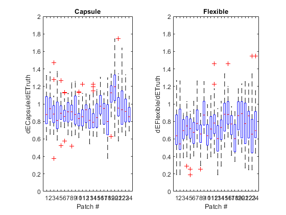

Pairwise Color Difference
compare capsule and flexible endoscopes
Contents
Load data
% input data files load('datain\labtruth','labtruth') load('datain\labxrite','labxrite') load('datain\labcapsule','labcapsule') load('datain\labflexible','labflexible')
try X-rite
labtruth = labxrite;
% CIELAB data truth(1:24) = ColorClass([0 0 0]); capsule(1:24) = ColorClass([0 0 0]); flexible(1:24) = ColorClass([0 0 0]); for i = 1:24 truth(i) = labtruth(i,:); capsule(i) = labcapsule(i,:); flexible(i) = labflexible(i,:); end if 1 % show data as colorchecker figure(501) im_truth = color2colorchecker24(truth); title('Truth') figure(502) im_capsule = color2colorchecker24(capsule); title('Capsule') figure(503) im_flexible = color2colorchecker24(flexible); title('Flexible') end % Color transfer in the 3D CIELAB color space if 1 % 3D view figure(1) clf hold on subplot(1,2,1) myquiver(truth,capsule) title('Capsule') view([66 27]) subplot(1,2,2) myquiver(truth,flexible) title('Flexible') view([66 27]) snapnow end if 1 % 2D view chromaticity figure(11) clf hold on subplot(1,2,1) myquiver(truth(1:18),capsule(1:18)) title('Capsule') view(2) subplot(1,2,2) myquiver(truth(1:18),flexible(1:18)) title('Flexible') view(2) snapnow end if 1 % 2D view lightness figure(12) clf hold on subplot(1,2,1) myquiver(truth(19:24),capsule(19:24)) axis([-20 20 -20 20 0 100]) title('Capsule') view([0 0]) subplot(1,2,2) myquiver(truth(19:24),flexible(19:24)) axis([-20 20 -20 20 0 100]) title('Flexible') view([0 0]) snapnow end if 1 % dE from truth as a bar chart for i = 1:24 dE_capsule(i) = capsule(i) - truth(i); dE_flexible(i) = flexible(i) - truth(i); end figure(13) subplot(4,1,1) bar([dE_capsule(1:6)' dE_flexible(1:6)']) subplot(4,1,2) bar([dE_capsule(7:12)' dE_flexible(7:12)']) subplot(4,1,3) bar([dE_capsule(13:18)' dE_flexible(13:18)']) subplot(4,1,4) bar([dE_capsule(19:24)' dE_flexible(19:24)']) xlabel('Patch #') ylabel('dE') title('dE from truth') legend('Capsule','Flexible') end
Compare input dE with output dE
if 1 % store dE in a 1D array diff_truth = zeros(24*23/2,1); diff_capsule = zeros(24*23/2,1); diff_flexible = zeros(24*23/2,1); k = 0; for ii = 1:24 for jj = ii+1:24 k = k + 1; i = ii; j = jj; diff_truth(k) = truth(i) - truth(j); diff_capsule(k) = capsule(i) - capsule(j); diff_flexible(k) = flexible(i) - flexible(j); end end % plot figure (2) clf hold on plot(diff_truth,diff_capsule,'o') plot(diff_truth,diff_flexible,'+') plot([0 100],[0 100],':') axis equal axis([0 100 0 100]) xlabel('Input dE') ylabel('Output dE') title('Pairwise Color Difference') legend('capsule','flexible','Identity') legend('Location','Southeast') end
Calculate dE
% two-dimensional dE dE_pair_truth = zeros(24,24); dE_pair_capsule = zeros(24,24); dE_pair_capsule_per_truth = zeros(24,24); dE_pair_flexible = zeros(24,24); dE_pair_flexible_per_truth = zeros(24,24); for ii = 1:24 for jj = 1:24 % the truth dE_pair_truth(ii,jj) = truth(ii) - truth(jj); % capsule dE_pair_capsule(ii,jj) = capsule(ii) - capsule(jj); % ratio of capsule to truth dE_pair_capsule_per_truth(ii,jj) = dE_pair_capsule(ii,jj) / dE_pair_truth(ii,jj); % flexible dE_pair_flexible(ii,jj) = flexible(ii) - flexible(jj); % ratio of flexible to truth dE_pair_flexible_per_truth(ii,jj) = dE_pair_flexible(ii,jj) / dE_pair_truth(ii,jj); end end % one-dimensional without self-comparison dE_pair_capsule_per_truth_NaN_removed = zeros(24,23); dE_pair_flexible_per_truth_NaN_removed = zeros(24,23); for ii = 1:24 k = 1; for jj = 1:24 if jj ~= ii dE_pair_capsule_per_truth_NaN_removed(ii,k) = dE_pair_capsule_per_truth(ii,jj); dE_pair_flexible_per_truth_NaN_removed(ii,k) = dE_pair_flexible_per_truth(ii,jj); k = k + 1; end end end if 1 % plot figure(4) subplot(1,2,1) boxplot(dE_pair_capsule_per_truth_NaN_removed') title('Capsule') xlabel('Patch #') ylabel('dECapsule/dETruth') axis([0 25 0 2]) subplot(1,2,2) boxplot(dE_pair_flexible_per_truth_NaN_removed') title('Flexible') xlabel('Patch #') ylabel('dEFlexible/dETruth') axis([0 25 0 2]) end
Two-dimensional heat map of pairwise dE
if 1 figure(201) clf % subplot(2,3,1) imagesc(dE_pair_truth) colorbar caxis([0 80]) axis square title('Truth') figure(202) clf % subplot(2,3,2) imagesc(dE_pair_capsule) colorbar caxis([0 80]) axis square title('Capsule') figure(203) clf % subplot(2,3,3) imagesc(dE_pair_capsule_per_truth) colorbar caxis([0 1.7]) axis square title('Capsule/Truth') figure(204) clf % subplot(2,3,4) imagesc(dE_pair_truth) colorbar caxis([0 80]) axis square title('Truth') figure(205) clf % subplot(2,3,5) imagesc(dE_pair_flexible) colorbar caxis([0 80]) axis square title('Flexible') figure(206) clf % subplot(2,3,6) imagesc(dE_pair_flexible_per_truth) colorbar caxis([0 1.7]) axis square title('Flexible/Truth') end